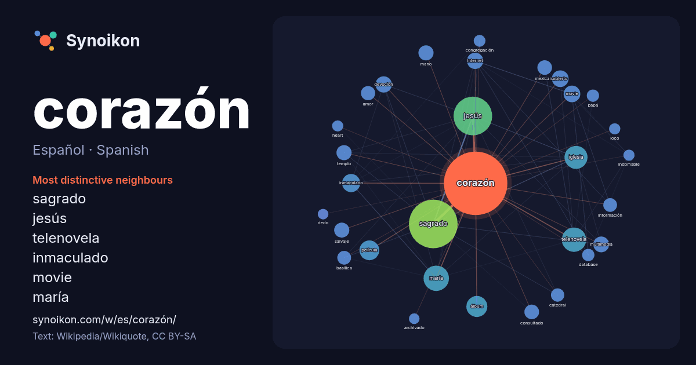

Español · Spanish · popular word
corazón
“heart” · The words found around it in 1243 instances from Spanish Wikipedia, Wikiquote.

Most distinctive neighbours
- sagrado 169×
- jesús 83×
- telenovela 41×
- inmaculado 27×
- movie 22×
- maría 21×
- devoción 21×
- multimedia 20×
- salvaje 18×
- abierto 18×
- consultado 18×
- internet 17×
- iglesia 15×
- basílica 14×
- mexicana 14×
- database 13×
- templo 13×
- papá 13×
- álbum 12×
- amor 11×
× = how many times more often than in general Spanish Wikipedia text.
Most frequent neighbours
- sagrado 188
- jesús 118
- maría 51
- telenovela 47
- iglesia 42
- álbum 35
- película 31
- inmaculado 26
- abierto 22
- movie 22
- devoción 21
- hombre 21
- internet 21
- multimedia 20
- canción 18
- conocida 18
- mano 18
- salvaje 18
- templo 18
- consultado 17
In context
- cuentan con tres corazones, un corazón sistémico y dos auxiliares. Los vertebrados tienen un aparato circulatorio cerrado, el corazón ha evolucionada Wikipedia snippets · Corazón
- Corazón, corazón fue un programa de televisión dedicado al periodismo del corazón que emitía La 1 de Televisión Española. Se trataba uno de los más longevos Wikipedia snippets · Corazón, corazón
- Sagrado Corazón de Jesús es una devoción católica referida al corazón de Jesucristo, como un símbolo de amor divino. La devoción al Sagrado Corazón tuvo Wikipedia snippets · Sagrado Corazón de Jesús
- El nombre de Iglesia del Sagrado Corazón (Corazón de Jesús o Corazón de María), puede referirse a alguno de los edificios cristianos, catalogados como Wikipedia snippets · Iglesia del Sagrado Corazón
- del Corazón de María Admirable para seglares. San Antonio María Claret fundó en 1859 la Congregación de Misioneros Hijos del Inmaculado Corazón de María Wikipedia snippets · Inmaculado Corazón de María
- y Javier de Hoyos. D Corazón se estrenó el 7 de julio de 1997 como un programa de reportajes dedicados al mundo del corazón. El formato estaba presentado Wikipedia snippets · D Corazón
- De corazón a corazón es un largometraje estadounidense estrenado en 1941 que cuenta la historia de Edna Gladney, quien ayuda a los niños huérfanos a encontrar Wikipedia snippets · De corazón a corazón
- impulsada a la circulación arterial. Corazón derecho: La aurícula derecha y el ventrículo derecho forman el corazón derecho. La aurícula derecha recibe Wikipedia snippets · Corazón humano
More Spanish words
- agua
- arte
- bosque
- caballo
- camino
- campana
- canción
- ciencia
- ciudad
- clima
- comida
- desierto
- dinero
- dios
- espejo
- estrella
- familia
- fuerza
- gato
- historia
- invierno
- isla
- jardín
- lengua
- lluvia
- madre
- mapa
- miel
- montaña
- muerte
- naturaleza
- oro
- otoño
- pan
- perro
- puente
- reloj
- sal
- salud
- silencio
- sombra
- tiempo
- tormenta
- trabajo
- tren
- té
- verano
- verdad
- vida
Precomputed on 2026-10-09 with default settings (±5 words, medium corpus). The interactive map can refresh it with live data.